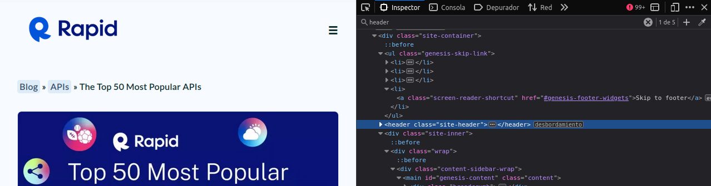
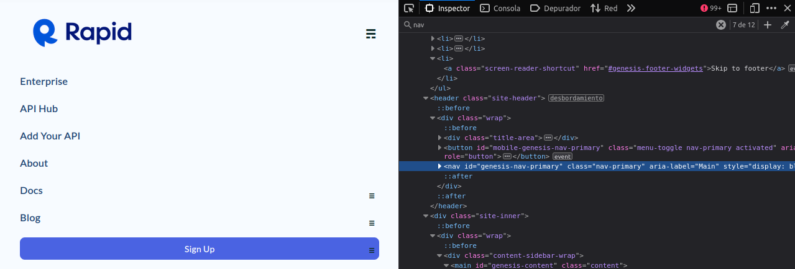
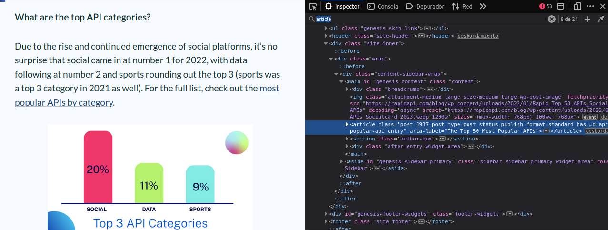
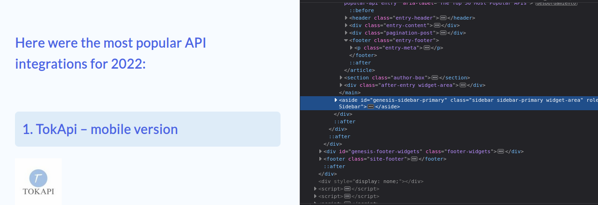
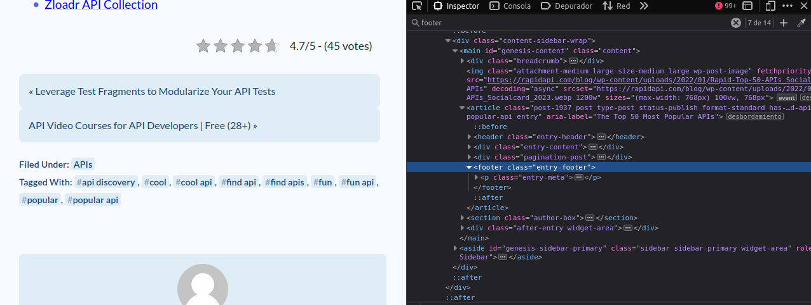
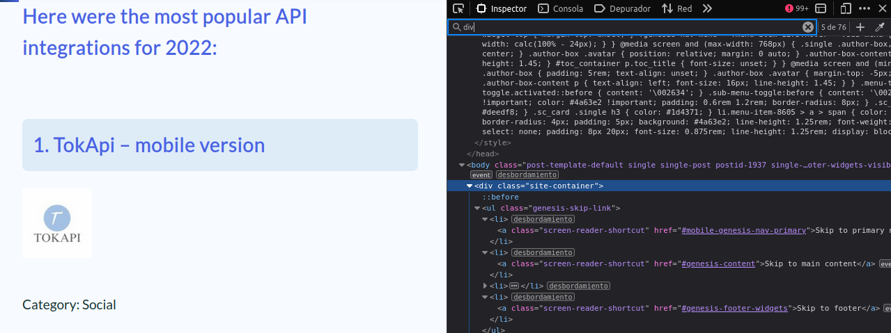
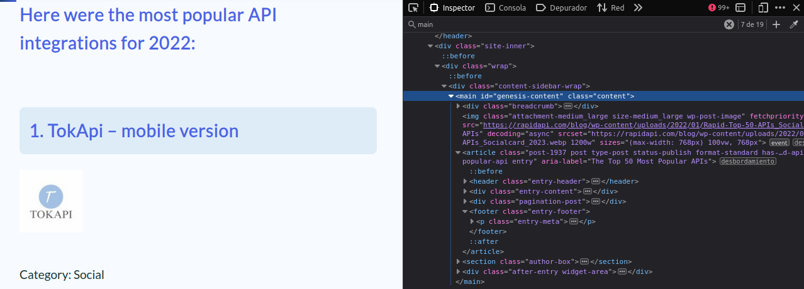

Reflexiona y responde.
a) ¿Qué diferencias principales existen entre HTML5 y su versión previa de HTML?
El HTML5 es semántico y el 4 no. Se implementa la cabecera DOCTYPE. Anteriormente se solían usar etiquetas 'div' anidadas y se identificaba el código con las etiquetas 'class' y 'id'.
b) ¿Consideras que algún elemento debería seguir siendo utilizado, como los marcos? ¿Por qué crees que la nueva versión HTML5 los deja obsoletos?
No, está mucho mejor así. Se quedan obsoletos porque ahora es mucho mas práctica la forma de programar y mas legible para el desarrollador.
Busca una página web que no esté en HTML5 e inspecciona su código fuente. ¿Cuáles son los cambios que realizarías en el código para convertirlo a HTML5?
En la primera línea del documento escribiría la etiqueta DOCTYPE correctamente y trataría de reconstruír su estructura por etiquetas semánticas
Realiza las siguientes listas:
a) Haz una lista ordenada de los cinco primeros países que vas a visitar en los próximos años. En la lista ordenada usarás números.
b) Utilizando la lista anterior, invierte el orden de los números.
c) Haz una lista ordenada con letras en mayúscula de tus comidas favoritas.
d) Utilizando la lista ordenada del apartado anterior, ahora ordena tus comidas favoritas con números romanos en mayúscula.
e) Haz una lista desordenada de tus películas favoritas. Utilizarás para el estilo de la lista cuadraditos negros.
f) Usando como ejemplo la lista desordenada del ejercicio 5, ahora utiliza como estilo de la lista puntos o circulitos negros.
g) Haz una lista anidada de ciudades que quieres visitar en los próximos cinco años de al menos tres países distintos.
Crea una página HTML5 con un formulario que contenga los siguientes elementos. Al finalizar, valida tu código en el validador de w3c (https://validator.w3.org/), analiza el resultado y adjúntalo a este ejercicio.
Busca una página web en Internet, haz una captura de alguna de sus interfaces, y señala donde se han usado las siguientes etiquetas semánticas: header, nav, article, aside, footer, div, y main. ¿Se han usado correctamente dichas etiquetas? Razona tus respuestas.
La web analizada fué esta.
Ejemplo de header: está bien usada.
Ejemplo de nav: está bien usada.
Ejemplo de article: sí está bien usada.
Ejemplo de aside: no está bien usada porque tiene contenido del tema principal de la web.
Ejemplo de footer: no está bien usada del todo, solo contiene algunas etiquetas contenidas en la web interesantes para el usuario.
Ejemplo de div: sí está bien usada.
Ejemplo de main: sí está bien usada.
